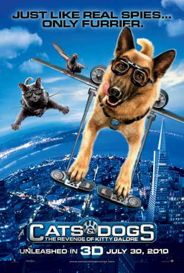

Alternativ: Cats & Dogs: The Revenge of Kitty Galore
 
 IMDB-Wertung: 4.3 / 10
IMDB-Wertung: 4.3 / 10  Metascore:
Metascore: 
Hunde und Katzen stehen seit jeher auf Kriegsfuß. Das ändert sich schlagartig, als das Kätzchen Kitty Kahlohr, Ex-Spionageagentin der Organisation MEOWS, dem Größenwahnsinn verfällt und sich mit einem teuflischen Vorhaben nicht nur die Hundewelt untertan machen will, sondern auch die eigenen Artgenossen. So schließen sich Katzen und Hunde kurzerhand zu einem Agententeam zusammen, um gegen den gemeinsamen Erzfeind vorzugehen. Schließlich ist ja auch noch das Leben ihrer Herrchen in Gefahr.
Jahr: 2010
Dauer: 82 Minuten
FSK:
Land: USA Studio: Warner Bros.Tonspuren: DD5.1 - ,
Untertitel:
Auflösung: 1080p (1920x1080) Größe: 5898 MB
Genre: Action, Komödie, Fantasy, Familie
Regisseur: Brad Peyton
Drehbuch: Ron J. Friedman, Steve Bencich, John Requa, Glenn Ficarra
Soundtrack: Christopher Lennertz
Darsteller:
 James Marsden als Diggs
James Marsden als Diggs Nick Nolte als Butch
Nick Nolte als Butch Christina Applegate als Catherine
Christina Applegate als Catherine Bette Midler als Kitty Galore
Bette Midler als Kitty Galore Neil Patrick Harris als Lou
Neil Patrick Harris als Lou Sean Hayes als Mr. Tinkles
Sean Hayes als Mr. Tinkles Wallace Shawn als Calico
Wallace Shawn als Calico Roger Moore als Tab Lazenby
Roger Moore als Tab Lazenby Joe Pantoliano als Peek
Joe Pantoliano als Peek Michael Clarke Duncan als Sam
Michael Clarke Duncan als Sam Chris O'Donnell als Shane
Chris O'Donnell als Shane Jack McBrayer als Chuck
Jack McBrayer als Chuck Fred Armisen als Freidrich
Fred Armisen als Freidrich Kiernan Shipka als Little Girl
Kiernan Shipka als Little Girl Paul Rodriguez als Crazy Carlito
Paul Rodriguez als Crazy Carlito Elizabeth Daily als Scrumptious / Patches / Catherine's Niece
Elizabeth Daily als Scrumptious / Patches / Catherine's Niece Phil LaMarr als Paws / Cat Spy Analyst
Phil LaMarr als Paws / Cat Spy Analyst Michael Beattie als Angus MacDougall
Michael Beattie als Angus MacDougall Jeff Bennett als Duncan MacDougall
Jeff Bennett als Duncan MacDougall Malcolm Stewart als Captain Flemming
Malcolm Stewart als Captain Flemming Dawn Chubai als Reporter
Dawn Chubai als Reporter Keith Dallas als Coit Tower Guard
Keith Dallas als Coit Tower Guard Grey Griffin als Security Bulldog / Catherine's Niece / Cat Spy Analyst
Grey Griffin als Security Bulldog / Catherine's Niece / Cat Spy Analyst Bumper Robinson als Cool Cat / Dog Killa / Cat Spy Analyst / Slim
Bumper Robinson als Cool Cat / Dog Killa / Cat Spy Analyst / Slim Rick D. Wasserman als Rocky
Rick D. Wasserman als Rocky Roger Jackson als Inmate Fat Cat
Roger Jackson als Inmate Fat Cat J.K. Simmons als Gruff K-9
J.K. Simmons als Gruff K-9 André Sogliuzzo als Snobby K-9
André Sogliuzzo als Snobby K-9 Carlos Alazraqui als Cat Gunner / Cat Spy Analyst
Carlos Alazraqui als Cat Gunner / Cat Spy Analyst Amitai Marmorstein als Playland Worker
Amitai Marmorstein als Playland Worker Karen Strassman als French Poodle , uncredited
Karen Strassman als French Poodle , uncredited Christopher L. Parson als Hep Cat / Cat Spy Analyst
Christopher L. Parson als Hep Cat / Cat Spy AnalystDatei: X:\Kinder Collections\Cats & Dogs\Cats & Dogs - Die Rache der Kitty Kahlohr (2010, FSK, 1920x1080) 3D.mkv seit 31.12.2015
Festplatte: Kinder-Filme+Trick
 Alle Filme aus Gruppe 'Kinder Collections\Cats & Dogs'
Alle Filme aus Gruppe 'Kinder Collections\Cats & Dogs'
(der aktuelle Film)